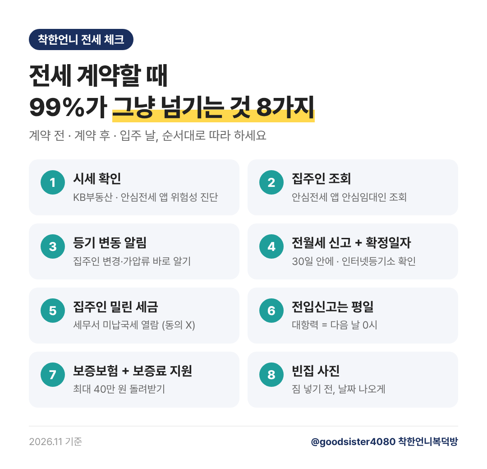
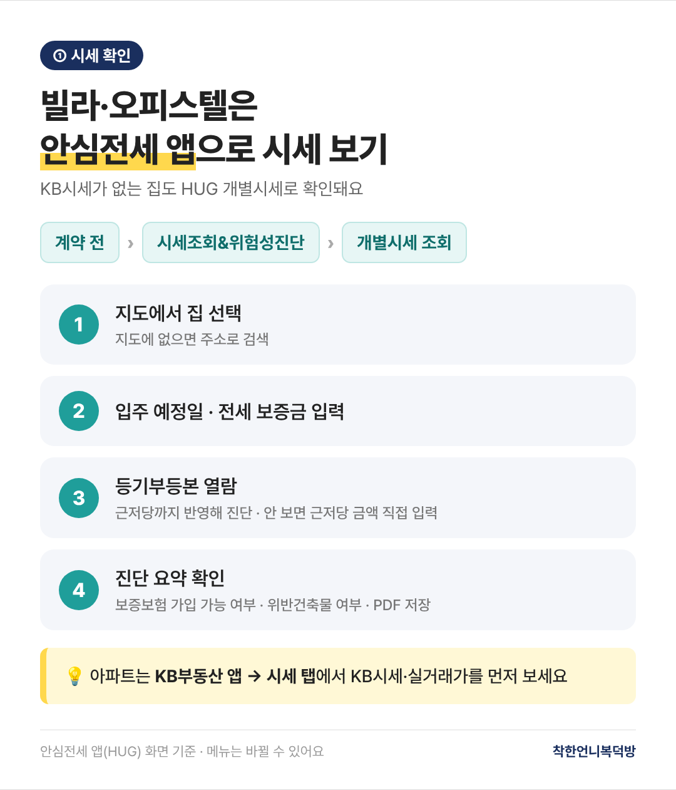
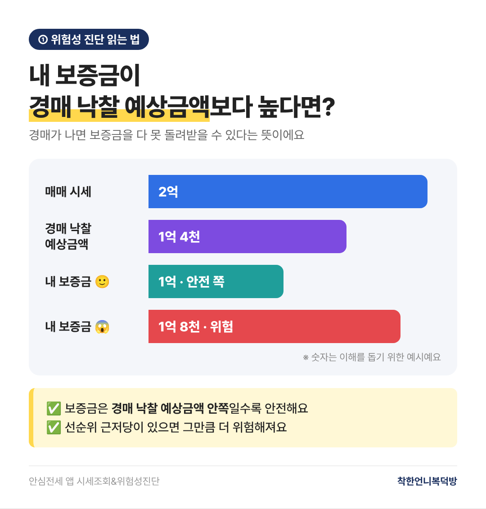
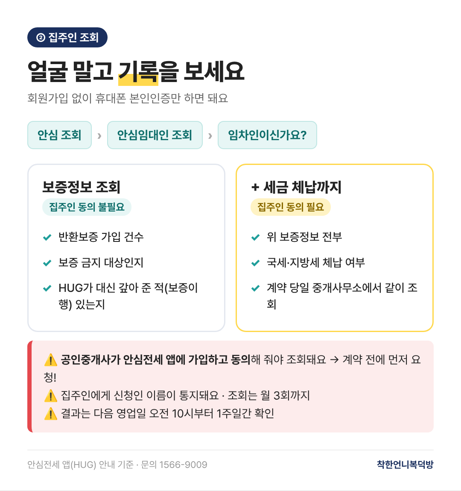
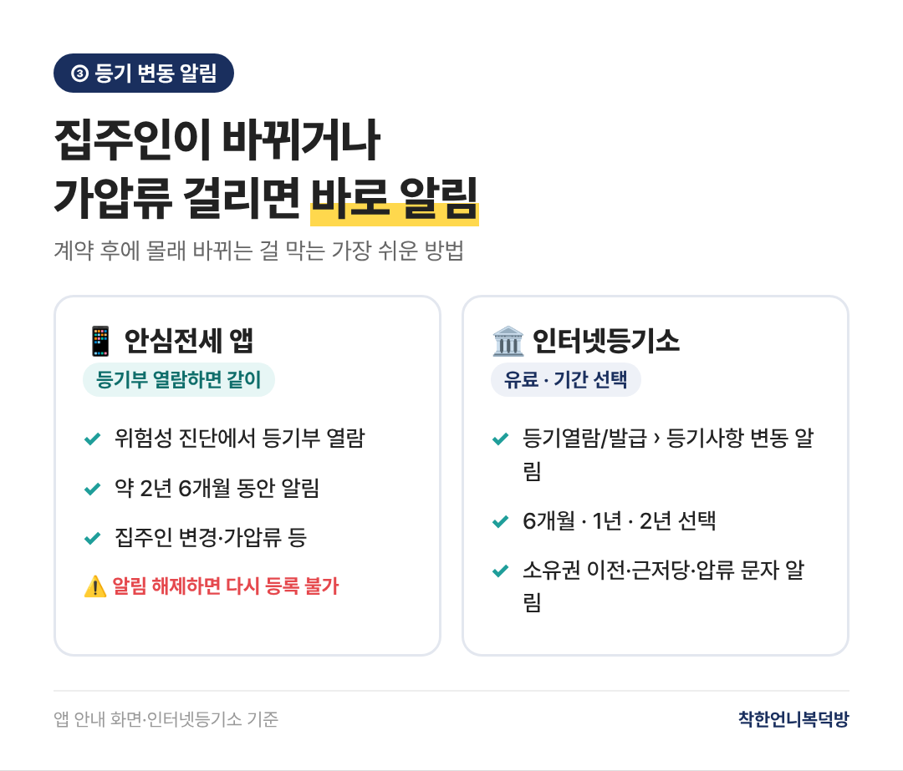
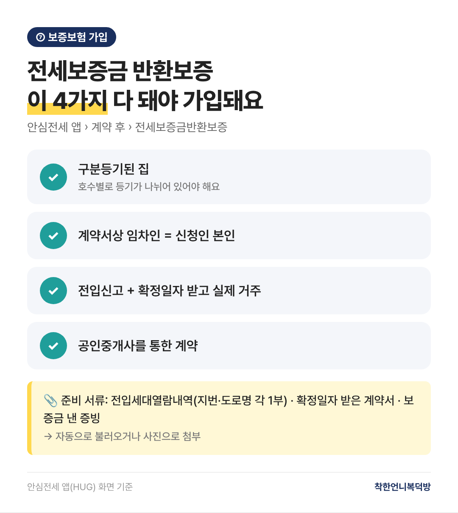
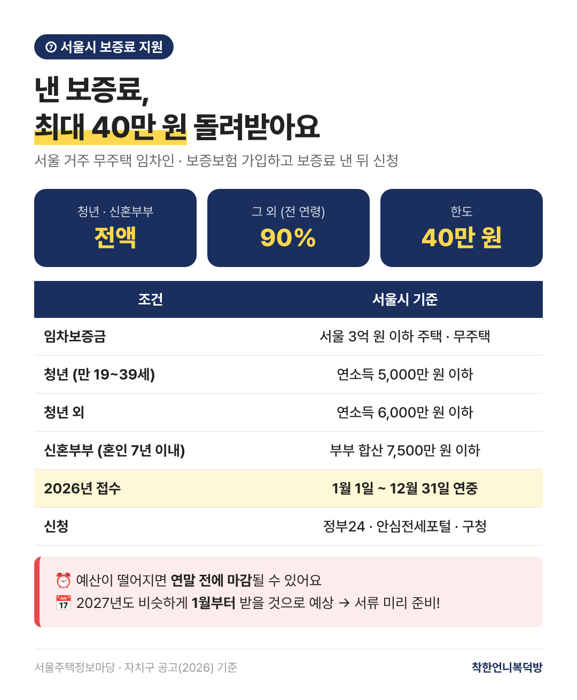
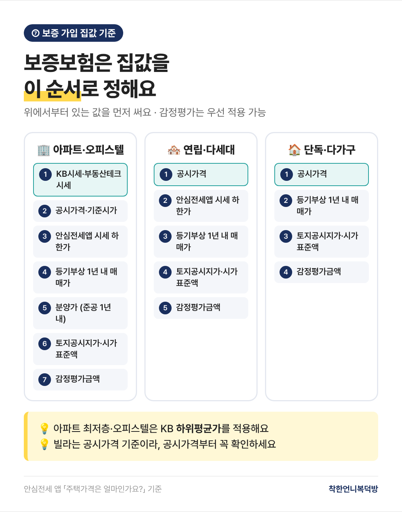
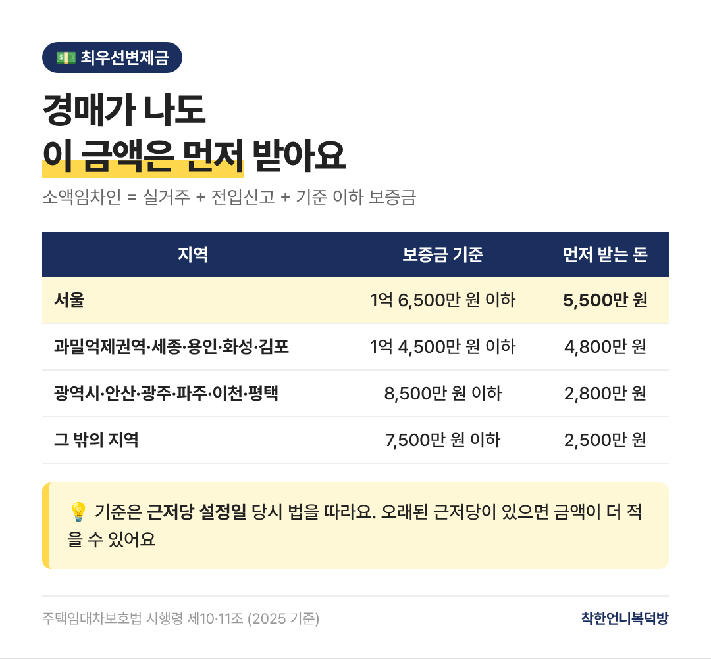

✍️ [직접 채우기: 도입 — 전세 계약 상담 때 손님이 실제로 놓쳤던 것 한 장면 (익명화, 확인된 것만)]
안녕하세요. 착한언니복덕방 신촌자이엘라&마포그랑자이 (착한언니) 부동산입니다.
2014년 겨울부터 신촌 한 자리, 12년째 마포·서대문만 보고 있어요.
“등기부등본만 보면 되는
거 아니에요?”
“집주인 세금 밀린
건 어떻게 알아요?”
전세 계약할 때
제일 많이 듣는 질문이에요.
등기부등본도 중요하지만,
등기부에 안 나오는 것들이 있어요.
오늘은 계약 전·계약
후·입주 날 순서대로
폰으로 바로 따라 할
수 있게 정리했어요.

▲ 전세 계약할 때
그냥 넘기기 쉬운 8가지 한눈에 보기
| 1. 시세부터 확인 — 이 보증금, 너무 높은 거 아냐? |
아파트는 KB부동산
앱 → 시세 탭에서
KB시세와 실거래가를 먼저 보세요.
빌라·오피스텔은 KB시세가
없는 경우가 많아서
안심전세 앱(HUG)이 편해요.

▲ 안심전세 앱 시세조회&위험성진단 따라 하기
여기서 꼭 봐야 하는
게 위험성 진단 그래프예요.
매매 시세 · 경매 낙찰 예상금액
· 내 보증금을
막대로 비교해 줘요.

▲ 위험성 진단 읽는 법 (숫자는 예시)
내 보증금이 경매 낙찰 예상금액보다 높으면, 경매가 나도 다 못 돌려받을 수 있다는 뜻이에요.
| 2. 집주인 조회 — 얼굴 말고 기록을 보세요 |
안심전세 앱 안심 조회
→ 안심임대인 조회에서
회원가입 없이
휴대폰 본인인증만 하면
조회할 수 있어요.

▲ 안심임대인 조회 —
동의 불필요 vs 동의 필요
따라 하기
✔ 안심 조회 → 안심임대인
조회 → 「임차인이신가요?」
✔ 보증정보
조회(동의 불필요) 또는
세금 체납까지(동의 필요) 선택
✔ 휴대폰 본인인증 →
계약 체결 여부 선택
✔ 집주인 성명·생년월일,
공인중개사 성명·휴대폰·등록번호,
주소·계약일·보증금 입력
✔ 신청 → 다음 영업일 오전
10시부터 1주일간 결과 확인
⚠️ 공인중개사가 안심전세 앱에 가입하고
동의해 줘야 조회가 돼요.
계약 전에 중개사에게 "안심임대인 조회 같이
해 주세요"라고 먼저 요청하세요.
집주인에게 신청인 이름이 통지되고,
조회는 월 3회까지예요.
같은 메뉴의
상습 채무불이행자 명단 조회는
집주인 이름만 검색하면 돼요.
| 3. 집주인이 바뀌거나 가압류 걸리면 바로 알림 |

▲ 등기 변동 알림 —
안심전세 앱 vs 인터넷등기소
안심전세 앱에서 등기부를 열람하면
약 2년 6개월 동안 등기
변동 알림이 같이 와요.
⚠️ 알림을 해제하면
다시 등록할 수
없으니 그대로 두세요.
인터넷등기소 등기사항 변동
알림(유료)도 있어요.
| 4. 계약하면 30일 안에 전월세 신고 → 확정일자 확인 |
✔ 대상: 보증금 6천만 원 초과
또는 월세 30만 원 초과
✔ 기한: 계약일부터 30일 이내
(정부24 · 부동산거래관리시스템 · 주민센터)
✔ 신고하면 확정일자가
같이 나와요 → 대법원
인터넷등기소에서
진짜 부여됐는지 한 번 더 확인
| 5. 집주인 밀린 세금 — 등기부에 안 나와요 |
2023년 4월부터
계약 후 ~ 입주일 전까지는
집주인 동의 없이 세무서에서
미납국세를 열람할 수 있어요.
✔ 준비물:
신분증 + 임대차계약서
(전국 어느 세무서나)
✔ 홈택스 → 신청/제출
→ 주요세무서류
신청 → 미납국세등
열람신청으로 미리 신청
✔ 열람만
가능 (복사·사진 X)
· 수수료 없음
✔ 지방세는 따로
→ 주민센터·위택스
「미납지방세 열람」
보통은 계약할 때 집주인이
국세·지방세 납세증명서를
가져오거나,
잔금날까지 확인해 줘요.
(집주인은 계약할 때 납세증명서를 보여줄 의무가 있어요 · 주택임대차보호법 제3조의7)
그런데 확인을
꺼리거나 자꾸 미룬다면
세입자가 직접 세무서·주민센터에서
열람하면 돼요.
열람하면 집주인에게
열람했다는 알림이 가요.
미리 "제가
직접 확인해 볼게요"라고
말해 두면 서로 편해요.
| 6. 전입신고는 평일, 이사 당일에 |
대항력은 전입신고
+ 입주 → 다음
날 0시부터 생겨요.
주말에 온라인 신청하면
다음 평일에 처리될 수 있어서,
잔금일을 평일로 잡고
그날 바로 신고하세요.
| 7. 보증보험 + 보증료 지원 (2026년에도 있어요) |

▲ 전세보증금 반환보증
가입 조건 4가지 + 서류
보증보험에 가입하고
보증료를 냈다면,
보증료를 돌려받는
지원도 꼭 챙기세요.

▲ 서울시 전세보증금반환보증
보증료 지원 2026 요약
서울시는 2026년에 1월 1일부터
12월 31일까지 연중 접수했어요.
다만 예산이 떨어지면
일찍 마감될 수 있어요.
2024년 3월부터
계속 이어 온 사업이라
2027년도 비슷하게 1월부터
받을 것으로 예상돼요.
보증보험 가입하면
보증서·보증료 영수증을
바로 챙겨 두세요.
✔ 서울 거주 무주택 ·
보증금 3억 이하 · 청년 만
19~39세 · 신혼부부 혼인 7년 이내
✔ 한도 40만 원은
2025.3.31 이후 보증
가입자부터 (그 전 가입자는 최대 30만 원)
✔ 자세한 기준:
서울주택정보마당 · 다산콜센터 120
보증 가입할 때
집값은 아래 순서대로 정해져요.
빌라는 공시가격이 먼저라,
공시가격부터 확인해 두면 좋아요.

▲ 보증 가입 시 주택가격 적용
순서 (안심전세 앱 수도권 기준)

▲ 최우선변제금 — 경매가 나도 먼저 받는 금액
| 8. 입주 날, 짐 넣기 전에 빈집 사진 |
벽·바닥·창틀·욕실을
날짜 나오게 찍어 두세요.
나갈 때 원상복구 다툼이
생기면 이게 증거예요.
| 📝 착한언니 현장 노트 |
✍️ [직접 채우기: 이 글 주제로 사무소에서 실제로 받은 문의·현장에서 본 것·거래하며 느낀 점 2~3줄 — 가격 전망 없이]
| 9. 정리하면 |
✔ 시세: KB부동산 ·
안심전세 앱 위험성 진단
✔ 집주인:
안심임대인 조회
(중개사 협조 필요)
✔ 등기 변동 알림 켜 두기
✔ 30일 안에 전월세 신고
→ 확정일자 확인
✔ 입주 전 세무서 미납국세 열람
✔ 평일 잔금 · 그날 전입신고
✔ 보증보험 + 보증료
최대 40만 원 지원
✔ 짐 넣기 전 빈집 사진
이 글 저장해 두고, 계약 전에 하나씩 체크해 보세요.
| 📊 착한언니복덕방 실거래 도구 단지 시세 · 내 예산 진단 리포트 신촌 오피스텔 · 청약까지 중개사가 매일 보는 시세표, 그대로 열어 드려요 👉 unnizip.kr/app |
새 글 알림을 받고 싶으시다면
블로그 이웃 추가 해 두세요.
계약부터 이사까지 돈 아끼는
순서를 이어서 정리할게요.
🏠 방 구하기 문의는
카카오톡 채널 착한언니복덕방에
「원하는 동네·예산·입주
날짜」만 남겨 주세요.
맞는 방을 골라 드려요.
인스타그램 @goodsister4080
이런 내용을 카드뉴스로 정리해요
쉽고 꾸준하게, 꼭 부자되세요!
────────────────
안심전세 앱(HUG) 화면·메뉴는
2026.11 기준이며
업데이트로 달라질 수
있어요(문의 1566-9009)
보증료 지원은 지자체 공고를 확인하세요
이 글은 법률 자문이 아니에요
착한언니복덕방 | 신촌자이엘라
& 마포그랑자이 부동산
4인 전원 공인중개사
중개보조원 없음
중개사무소: 신촌자이엘라부동산공인중개사사무소
대표 공인중개사: 신수경
등록번호 11410-2019-00062
소재지: 서울특별시 서대문구
대현동 104-36, B101호
연락처: 02-364-4080
카카오톡 채널:
pf.kakao.com/_xcxoBxnX